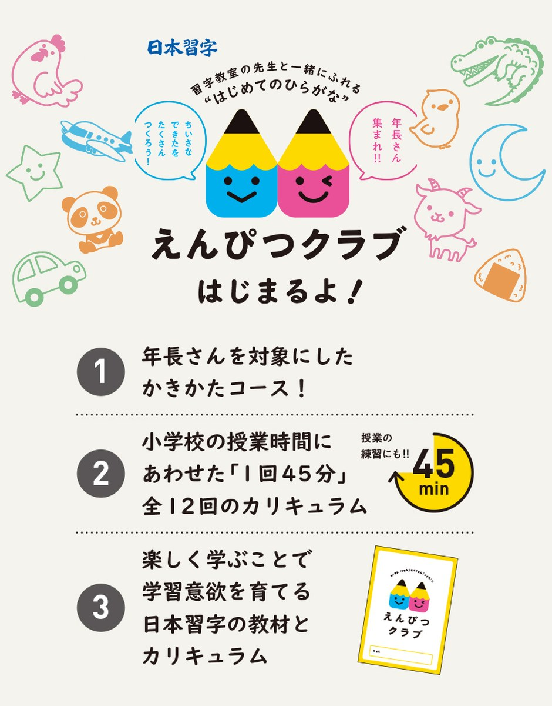
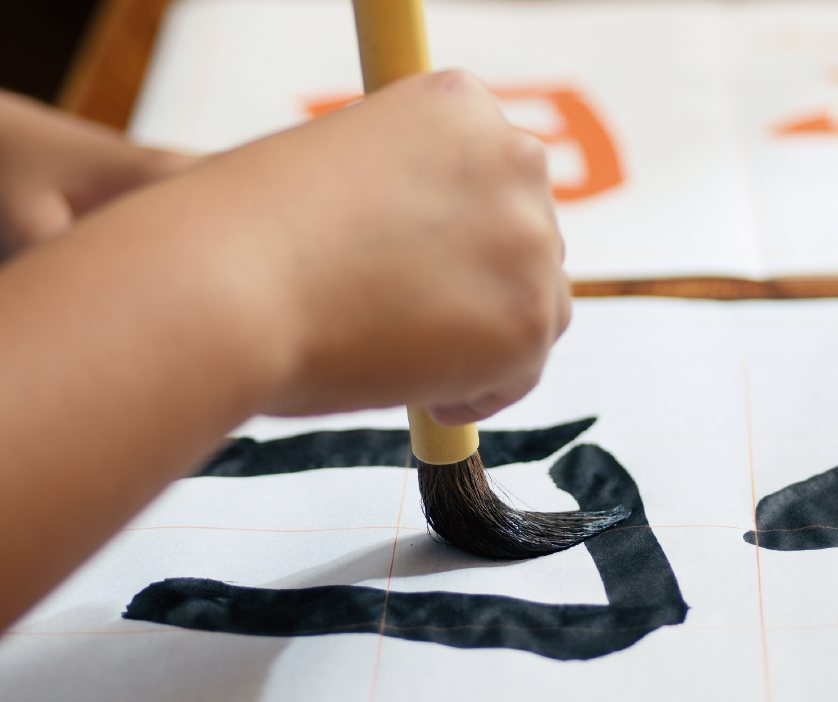
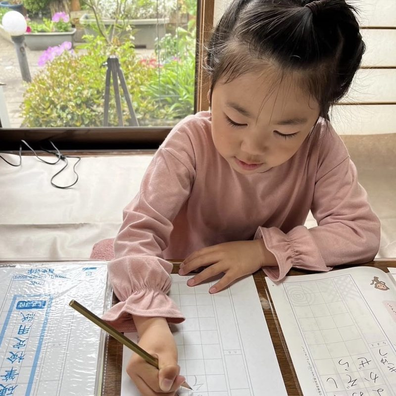
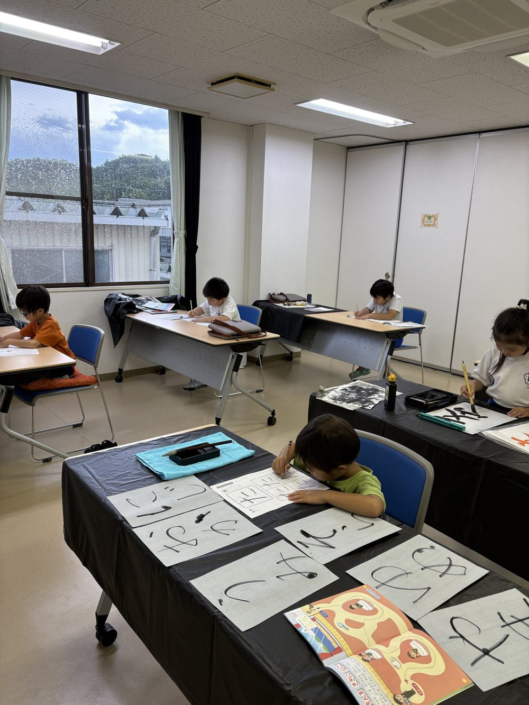
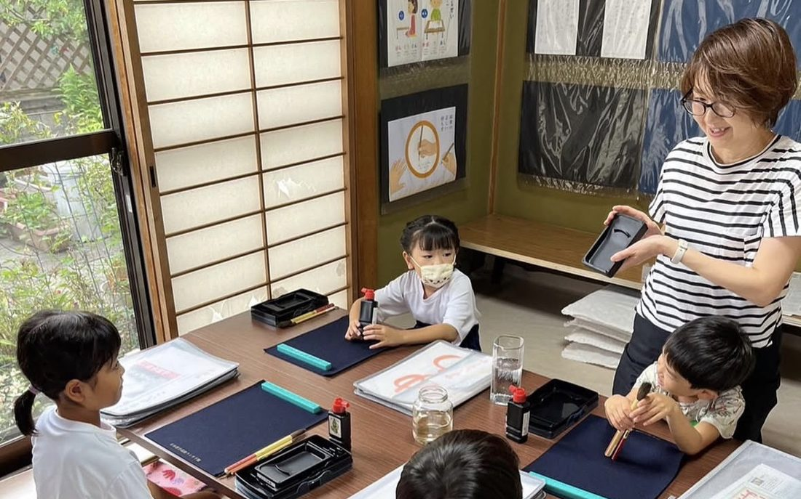
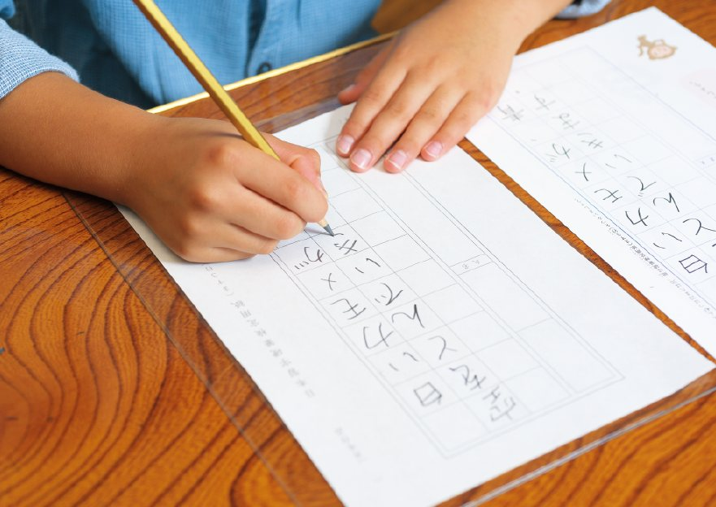
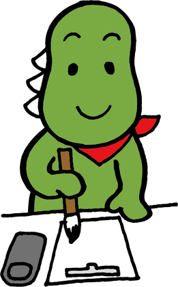
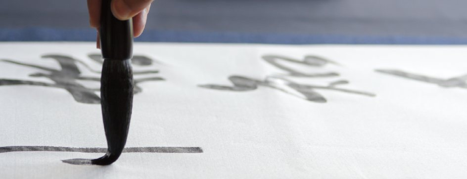
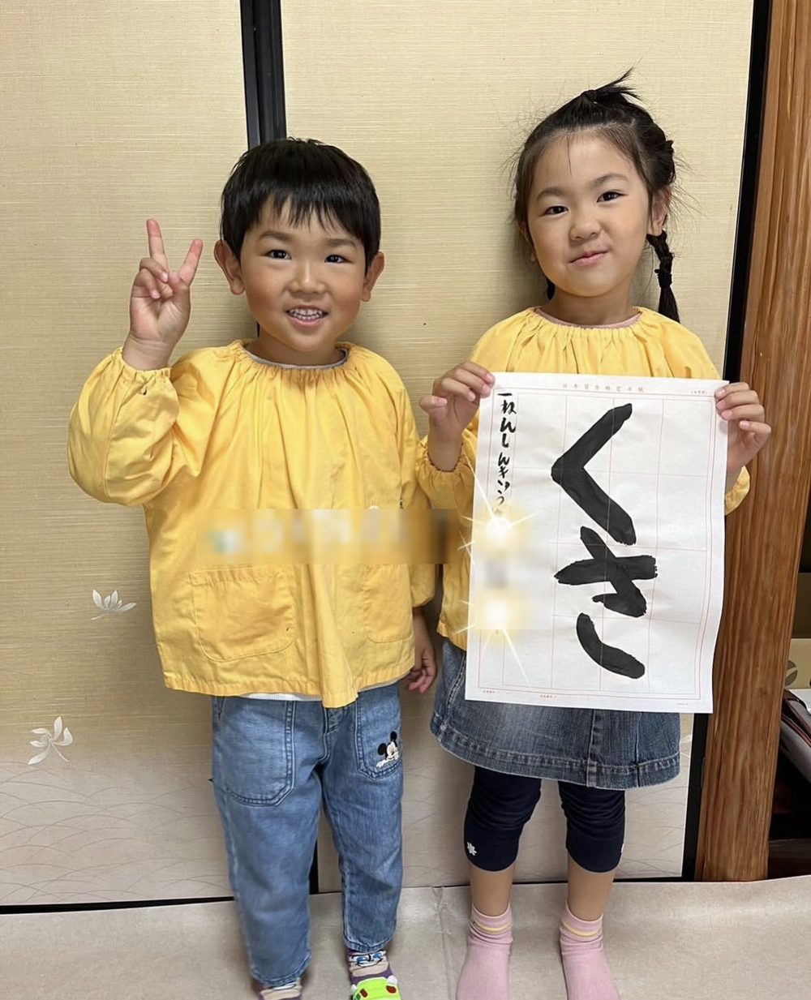

年長さん教室
えんぴつクラブ
入学準備をお考えの方へ
日本習字のオリジナル教材で、ひらがな50音と正しい書き順を学びます。書くための良い姿勢や、鉛筆の持ち方も身につけます。1回45分は、小学校の授業と同じ長さです。
- 回数
- 全12回（1回45分）
- 日時
- 土曜日（開講日は後日お知らせします）
- 定員
- 1クラス最大4名
1,500円／回
別途 教材費3,000円
はじめての鉛筆の持ち方から、毛筆・硬筆まで。
お手本をよく見て、考えて、ていねいに書く。一人ひとりの成長を大切にする、多治見のお習字教室です。



字のくせも、得意なことも、成長のペースも、お子さまそれぞれ違います。にじいろ教室は、そのちがいを「その子の色」として大切にする教室です。
正しい筆づかいをしっかり身につけながら、昨日より少しうまく書けた自分に出会える。そんな時間を、積み重ねてほしいと願っています。
字がきれいになるだけではありません。お手本をよく見て、話を聞いて、自分で考えて、ていねいに書く。その積み重ねが、勉強にも生きる「学ぶ姿勢」になっていきます。
正しい姿勢と、筆や鉛筆の持ち方を、いちばんはじめに大切にします。
どこが長い？どこで曲がる？ お手本をじっくり見る力を育てます。
説明を聞いたら、どう書くかを自分で考えてから書きはじめます。
たくさん書くのも大切ですが、一枚に集中して、心をこめて書くことも大切です。
前の字とくらべたり、級が上がったり。「うまくなった！」を子ども自身が感じられるようにします。
一歩ずつ、
はじめての習いごとでも、安心して通えるように。
少人数なので、書いているその場で、姿勢や筆の持ち方を確かめられます。説明も、お子さんの分かり方に合わせて言葉を変えます。「さっきより線がまっすぐになったね」。書いている途中の小さな変化にも気づいて、すぐに声をかけられるのが、少人数のよさです。

日本習字は、全国に1万以上の教室をもつ、国内最大クラスの書道団体です。毎月のお手本で練習し、いちばんよく書けた1枚を検定に送ります。級や段は日本習字の審査で判定されるので、がんばりがきちんと形になります。「昇級するぞ」という気持ちが、続ける力になります。


講師は日本習字の師範ですが、今も先生についてお稽古を続ける「生徒」でもあります。だから、うまく書けないもどかしさも、書けたときのうれしさも、子どもたちと同じように知っています。日本習字のバックアップのもとで教え方も学び、先生仲間と「どうしたらもっと伝わるか」を考え合いながら、よりよい教室づくりをめざしています。


日本習字のオリジナル教材で、ひらがな50音と正しい書き順を学びます。書くための良い姿勢や、鉛筆の持ち方も身につけます。1回45分は、小学校の授業と同じ長さです。

毛筆と硬筆の両方を、学年に合わせたお手本でしっかり学びます。きれいな字とあわせて、集中力やあいさつも身につきます。毎月の検定で昇級をめざします。

きれいな字を書きたい、筆の時間を楽しみたい、暮らしの中で役立てたい。目的に合わせて選べます。
毎月のお稽古では、検定で昇級をめざします。そのほかにも、画仙や公民館での作品展示など、がんばりを見てもらえる機会があります。
入会した月から、学年に合ったお手本で始められます。
その月のいちばんの1枚を提出。級が上がると、前の自分より書けるようになったことが目に見えます。
7月は七夕、12月は書き初めの作品を、画仙という大きな紙に書きます。翌月に結果が届き、よい作品には賞が贈られます。
10月、公民館のマイタウンフェスティバルで作品を展示します。ご家族で見に来てください。
書き初めの作品を、公民館に展示します。新しい年の気持ちをこめた一枚です。
金井 夢子雅号 淑真（しゅくしん）
前より上手に書けた。
その気づきが、次の一歩につながります。
幼稚園のころにお習字を始めました。離れていた時期もありましたが、また書きたいと思えるのがお習字でした。会社勤めを経て、これからは好きなお習字をずっと続けていきたいと思い、教室をひらきました。
「字が苦手」と言って入会したお子さんが、続けるうちにどんどん級を上げ、学校の発表で「字は苦手だけど、いまがんばっていること」として習字の話をしてくれたそうです。教室で書いた作品でなくても、学校から出品するコンテストで入賞すると「見に来てね」とうれしそうに知らせてくれるお子さんもいます。字が上手になることと同じくらい、「がんばっている」と自分で言えるようになる姿が、とてもうれしいです。
作品やお稽古の様子はInstagramで、書き方のコツはYouTubeで発信しています。
ここにないことも、お気軽にお問い合わせください。
年長さんから通えます。お習字は「書く」お稽古なので、目安は「ひらがながだいたい読めること」です。読めるようになると、書くこともできるようになります。まだ読むのに自信がないお子さんには、入学準備の「えんぴつクラブ」もあります。
入会のときに入会金がかかります。また、月謝とは別に、日本習字のお手本代がかかります。くわしい金額は、お問い合わせいただいた方に資料でご案内します。
振替は行っておりません。お稽古は月3〜4回で、日程は年間予定表であらかじめお知らせします。
はい。きょうだいで通っているご家庭もたくさんあります。送り迎えが一度ですむよう、できるだけ同じ時間に通えるよう調整します。ただし、クラスの空き状況によってはご希望にそえないこともありますので、まずはご相談ください。
はい。高校生以上の方は「高校生・大人の部」で、漢字部・ペン部・くらしの書を教室で学べます。ペン部はオンラインでも受講できます。くわしくは大人の方へのページをご覧ください。
お子さまに、いつものお稽古を体験してもらえます。筆を持って書く楽しさを、感じてみてください。
お申し込み方法は、ただいま準備中です。
近日中にこちらでご案内します。